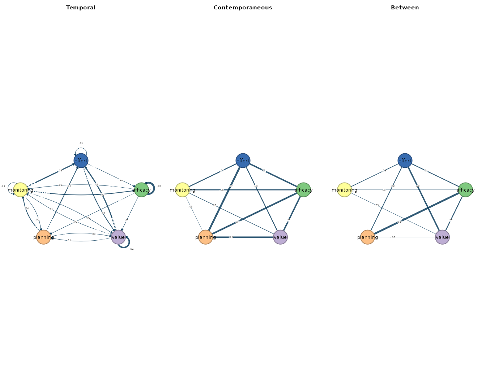
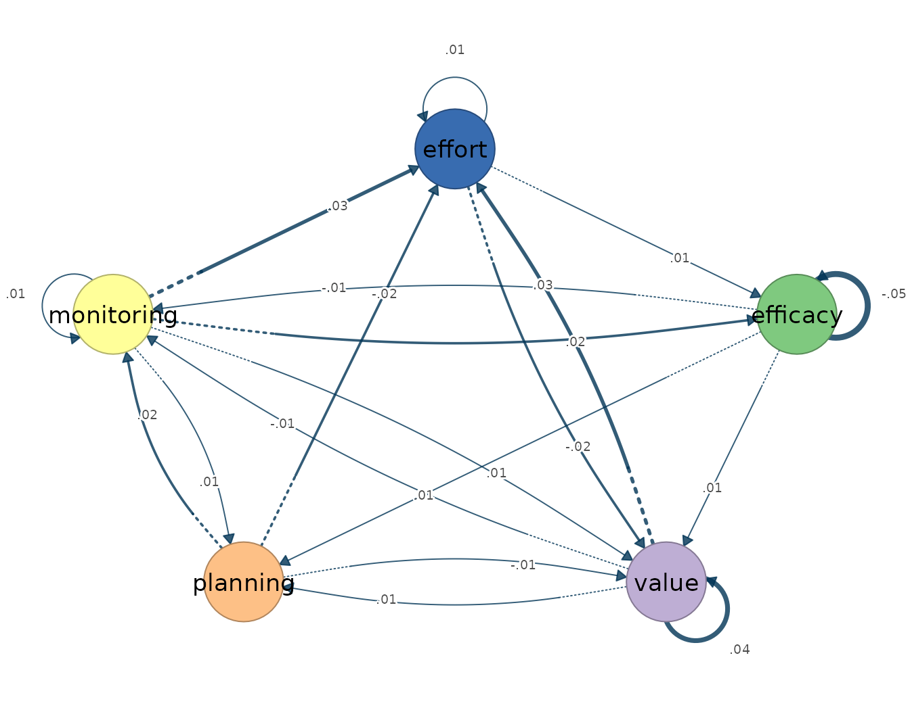
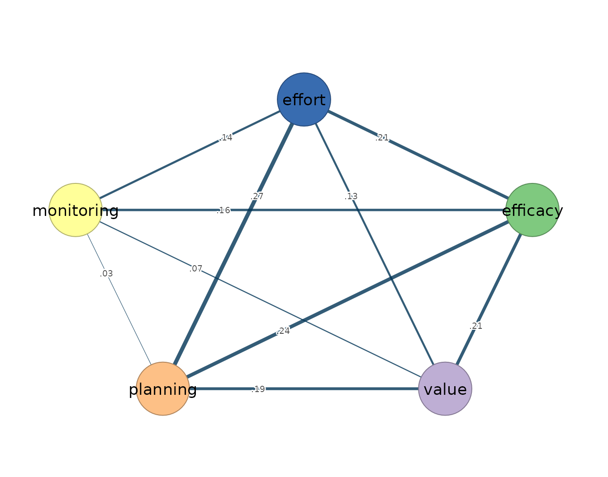
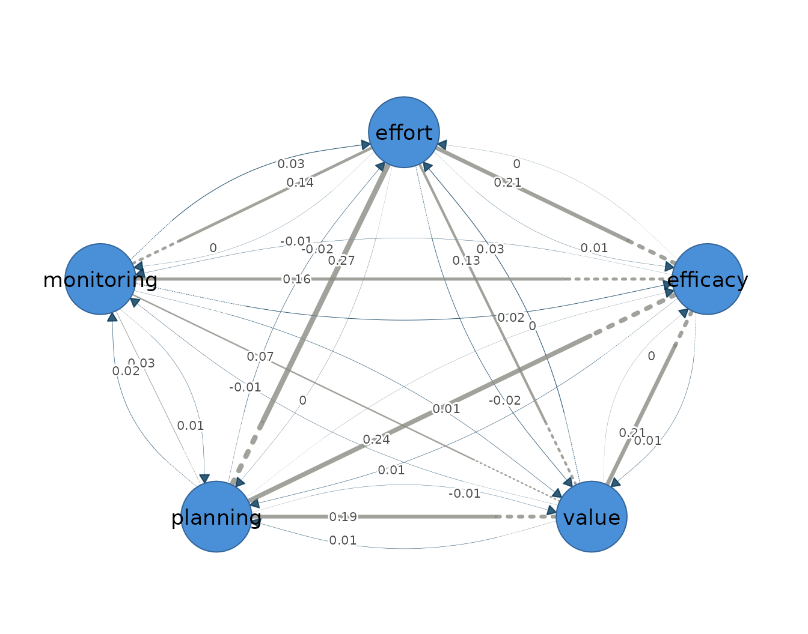
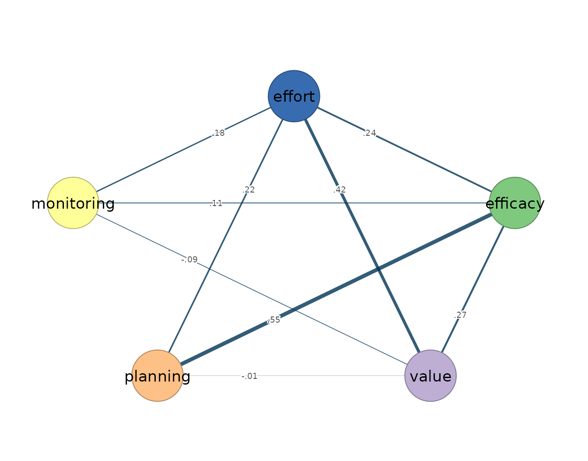

The multilevel vector autoregression models the intensive
longitudinal series of an entire panel jointly, decomposing each
person’s observations into a stable person-specific mean and momentary
deviations around that mean, and fitting a first-order dynamic process
to the deviations (Epskamp et al. 2018). Its
estimand differs from that of the single-subject estimators in this
package: where fit_var() and
fit_graphical_var() recover one individual’s dynamics,
fit_mlvar() pools across individuals and recovers the
average within-person process — the lag-one structure a typical member
of the panel follows — together with a separate description of how the
stable person-level means covary. It presumes weak stationarity of each
person’s series, meaning that the mean, variance, and autocovariance are
constant across the observation window; linear, lag-one dynamics;
approximately Gaussian residuals; equally spaced measurement occasions;
and a correctly specified multilevel structure for the pooling.
The model yields three networks over the same variables, and the
distinction between the within-person and between-person layers is
central to reading them. The temporal network is directed and
within-person: an edge from -> to is the fixed effect of
from at occasion
on to at occasion
,
holding the other lagged variables constant — the average lag-one
prediction across the panel, expressed on within-person deviations. The
contemporaneous network is undirected and also within-person: after the
previous occasion has explained what it can, the residuals within the
same occasion may still be associated, and the contemporaneous edges are
the average within-person partial correlations among these same-occasion
residuals. The between-person network is a different estimand
altogether. Its edges are partial correlations among the stable
person-level means — associations among who scores high on average, not
among what fluctuates within anyone — and it must not be interpreted as
a within-person process (Epskamp et al. 2018). The two
levels answer different questions, are estimated from different sources
of variance, and are under no obligation to agree: a pair of variables
can be positively coupled within persons and negatively associated
between them, or the reverse, and the fit below contains exactly such a
sign reversal.
The multilevel model therefore targets the group-average
within-person structure, not any single person’s network. On the
idiographic premise that within-person dynamics need not match the
structure of the group, the average process is a summary of the panel,
not a portrait of any member: a fixed-effect temporal network can be
weak or null while individual students carry strong, mutually cancelling
dynamics. fit_mlvar() accordingly complements rather than
replaces the single-subject estimators — it is the appropriate tool when
the question concerns the typical process and the panel is large, and
the subject-by-subject fits remain the appropriate tool when individual
differences in dynamics are themselves the target.
Data and preprocessing
The estimator expects long format: one row per person-occasion, an id
column, and numeric time-varying indicators ordered within person. The
bundled srl data hold self-regulated-learning indicators
for 36 students measured over 156 occasions each; the multilevel model
uses the full panel on five indicators: efficacy,
value, planning, monitoring, and
effort. Because the estimators absorb assumption violations
silently — a trending series inflates its autoregressive coefficient
rather than producing an error — the stationarity screen precedes the
fit, with min_obs = 100 requiring at least one hundred
usable occasions per student.
vars <- c("efficacy", "value", "planning", "monitoring", "effort")
preprocess(srl, vars = vars, id = "name", min_obs = 100)
#> Idiographic Preprocessing
#> Variables: 5 (efficacy, value, planning, monitoring, effort)
#> Ordered rows: 5616
#> Retained pairs: 5548
#> Trend flags: 10
#> High AR flags: 0
#> Drift flags: 1
#> Unit-root risk: 0
#> Zero variance: 0
#> Tables: x$pairs | x$counts | x$diagnostics
#>
#> 10 of 180 subject-series show a trend or unit-root that can bias the temporal network. preprocess() only diagnosed this; to clean just the series that need it, re-run with:
#> preprocess(data = srl, vars = vars, id = "name", min_obs = 100, detrend = "auto")The 36 students contribute 5616 ordered rows, of which 5548 survive as complete current/lagged pairs: each student loses the first occasion to the initial lag, and a few lose more to missing values. Ten subject-series trip the linear-trend flag and one shows drift between the halves of its window — a stationarity caution to carry into interpretation — but no series shows zero variance, near-unit-root persistence, or a unit root, so the model is fitted on the series as they stand.
Fitting the model
The call specifies the mixed-model backend
(estimator = "lmer"), a common temporal matrix across
students (temporal = "fixed"), a common residual
partial-correlation layer (contemporaneous = "fixed"), and
the full set of lagged predictors rather than autoregressions only
(AR = FALSE). The fixed-effect specification is
deliberately conservative: it estimates the average temporal network
without random slopes, which keeps the model fast and estimable at the
cost of any statement about how individual students deviate from the
average.
mlvar_fit <- fit_mlvar(
srl, vars = vars, id = "name",
estimator = "lmer", temporal = "fixed", contemporaneous = "fixed",
AR = FALSE
)
mlvar_fit
#> mlVAR result: 36 subjects, 5548 observations, 5 variables (lags 1)
#> Temporal edges significant at p<0.05: 2 / 25
#>
#> Temporal [directed]
#> weights [-0.049, 0.044] | +17 / -8 edges
#> efficacy value planning monitoring effort
#> efficacy -0.05 0.01 0.01 -0.01 0.00
#> value 0.00 0.04 0.01 -0.01 0.03
#> planning 0.00 -0.01 0.00 0.02 -0.02
#> monitoring 0.02 0.01 0.01 0.01 0.03
#> effort 0.01 -0.02 0.00 0.00 0.01
#>
#> Contemporaneous [undirected]
#> weights [0.026, 0.274] | +10 / -0 edges
#> efficacy value planning monitoring effort
#> efficacy 0.00 0.21 0.24 0.16 0.21
#> value 0.21 0.00 0.19 0.07 0.13
#> planning 0.24 0.19 0.00 0.03 0.27
#> monitoring 0.16 0.07 0.03 0.00 0.14
#> effort 0.21 0.13 0.27 0.14 0.00
#>
#> Between [undirected]
#> weights [-0.086, 0.553] | +8 / -2 edges
#> efficacy value planning monitoring effort
#> efficacy 0.00 0.27 0.55 0.11 0.24
#> value 0.27 0.00 -0.01 -0.09 0.42
#> planning 0.55 -0.01 0.00 0.00 0.22
#> monitoring 0.11 -0.09 0.00 0.00 0.18
#> effort 0.24 0.42 0.22 0.18 0.00
#>
#> plot(x) | plot(x, layer = "temporal") | plot(x, layer = "between")
#> edges(x) | nodes(x) | summary(x) | coefs(x) | matrices(x)The fitted object pools 36 subjects and 5548 observations on five variables into the three layers. The temporal layer is weak: only 2 of the 25 fixed lag-one effects (self-loops included) reach significance at , and the weights, self-loops included, span -0.049 to 0.044. The contemporaneous layer is dense and entirely positive, with within-occasion partial correlations reaching 0.274. The between-person layer is the strongest of the three, spanning -0.086 to 0.553 with eight positive and two negative edges.
Reading the output
The summary() method reports one row per network layer,
with the edge count, density, and mean absolute weight.
summary(mlvar_fit)
#> network n_nodes n_edges density mean_abs_weight n_positive n_negative
#> 1 temporal 5 20 1 0.01212956 14 6
#> 2 contemporaneous 5 10 1 0.16471314 10 0
#> 3 between 5 10 1 0.20864447 8 2No layer is pruned — the model is unregularized, so every
off-diagonal cell carries an estimate and each density is 1 — which
makes the mean absolute weight the informative column. The temporal mean
of 0.012 is an order of magnitude below the contemporaneous 0.165 and
the between-person 0.209: on average, a student’s state one occasion
earlier predicts little, while variables co-move within occasions and,
above all, stable student averages covary. The edges()
accessor lists the edges of a layer in decreasing magnitude.
edges(mlvar_fit, network = "temporal", n = 5)
#> network from to weight
#> 1 temporal monitoring effort 0.02913069
#> 2 temporal value effort 0.02907386
#> 3 temporal monitoring efficacy 0.02438515
#> 4 temporal effort value -0.02186814
#> 5 temporal planning monitoring 0.01660044The strongest average lag-one effects between distinct variables run from monitoring at to effort at (0.029), from value to effort (0.029), and from monitoring to efficacy (0.024); the strongest negative effect runs from effort to value (-0.022). Each is an average within-person effect — a claim about the typical student’s occasion-to-occasion prediction, not a claim that holds for every student.
edges(mlvar_fit, network = "contemporaneous", n = 5)
#> network from to weight
#> 1 contemporaneous planning effort 0.2739070
#> 2 contemporaneous efficacy planning 0.2408473
#> 3 contemporaneous efficacy effort 0.2082937
#> 4 contemporaneous efficacy value 0.2067757
#> 5 contemporaneous value planning 0.1915841The contemporaneous layer is led by planning–effort (0.274), efficacy–planning (0.241), and efficacy–effort (0.208). Each is an average within-person, within-occasion conditional association: on occasions when a student reports more planning than their own average, they also report more effort at the same occasion, over and above what the other indicators and the previous occasion explain.
edges(mlvar_fit, network = "between", n = 5)
#> network from to weight
#> 1 between efficacy planning 0.5530795
#> 2 between value effort 0.4152406
#> 3 between efficacy value 0.2742516
#> 4 between efficacy effort 0.2395848
#> 5 between planning effort 0.2198713The between-person layer reads differently in kind, not merely in strength. Its strongest edge, efficacy–planning at 0.553, states that students whose average efficacy is high also report high average planning; value–effort at 0.415 is likewise a statement about stable differences among students. Nothing in these edges concerns change within any student. The value–monitoring pair makes the contrast between the two levels concrete: the association is positive within persons (0.07 in the contemporaneous layer) and negative between persons (-0.09 in the between layer) — a student momentarily above their own value average tends also to be above their monitoring average, while students whose value is high on average tend to have lower average monitoring than their peers.
Node-level structure follows from the edges through
nodes(), whose strength column sums the absolute weights
incident to each node within a layer.
nodes(mlvar_fit)
#> network node strength out_strength in_strength self
#> 1 temporal efficacy 0.06867091 0.03466279 0.03400812 -0.048519405
#> 2 temporal value 0.10716085 0.05222493 0.05493593 0.044116371
#> 3 temporal planning 0.08073748 0.04107373 0.03966374 -0.001996653
#> 4 temporal monitoring 0.11638052 0.07786856 0.03851196 0.006469844
#> 5 temporal effort 0.11223257 0.03676115 0.07547142 0.008863988
#> 6 contemporaneous efficacy 0.81351544 NA NA 0.000000000
#> 7 contemporaneous value 0.59816798 NA NA 0.000000000
#> 8 contemporaneous planning 0.73197078 NA NA 0.000000000
#> 9 contemporaneous monitoring 0.39957216 NA NA 0.000000000
#> 10 contemporaneous effort 0.75103653 NA NA 0.000000000
#> 11 between efficacy 1.17596067 NA NA 0.000000000
#> 12 between value 0.78239697 NA NA 0.000000000
#> 13 between planning 0.78273021 NA NA 0.000000000
#> 14 between monitoring 0.37734989 NA NA 0.000000000
#> 15 between effort 1.05445168 NA NA 0.000000000In the temporal layer monitoring has the largest out-strength (0.078)
and effort the largest in-strength (0.075), so the average lagged
signal, weak as it is, flows from monitoring toward effort; the largest
single temporal coefficients are the self-loops of efficacy (-0.049) and
value (0.044), reported in the self column. In the
between-person layer efficacy has the largest strength (1.176), driven
by its associations with planning and value, followed by effort (1.054).
The full coefficient tables are available from
coefs(mlvar_fit), and the three layer matrices from
matrices().
matrices(mlvar_fit)
#>
#> $temporal
#> efficacy value planning monitoring effort
#> efficacy -0.049 0.002 0.002 0.024 0.006
#> value 0.011 0.044 -0.007 0.015 -0.022
#> planning 0.014 0.012 -0.002 0.010 0.005
#> monitoring -0.008 -0.010 0.017 0.006 -0.004
#> effort 0.001 0.029 -0.016 0.029 0.009
#>
#> $contemporaneous
#> efficacy value planning monitoring effort
#> efficacy 0.000 0.207 0.241 0.158 0.208
#> value 0.207 0.000 0.192 0.074 0.126
#> planning 0.241 0.192 0.000 0.026 0.274
#> monitoring 0.158 0.074 0.026 0.000 0.143
#> effort 0.208 0.126 0.274 0.143 0.000
#>
#> $between
#> efficacy value planning monitoring effort
#> efficacy 0.000 0.274 0.553 0.109 0.240
#> value 0.274 0.000 -0.007 -0.086 0.415
#> planning 0.553 -0.007 0.000 0.003 0.220
#> monitoring 0.109 -0.086 0.003 0.000 0.180
#> effort 0.240 0.415 0.220 0.180 0.000The matrices restate the layer contrast cell by cell: the contemporaneous matrix is entirely positive with planning–effort (0.274) as its largest entry, while the between-person efficacy–planning cell (0.553) exceeds every within-person association in the model — a reminder that the two layers estimate different quantities and require separate interpretation.
Visualizing the network
Plotting the fit draws the three layers side by side: arrows in the temporal panel denote average lag-one prediction, edge width scales with absolute weight, and colour encodes sign.
plot(mlvar_fit)
The contrast between panels restates the summary graphically: thin, diffuse temporal arrows against dense undirected contemporaneous and between-person structure. Each layer can also be drawn alone.
plot(mlvar_fit, layer = "temporal")
The temporal layer is thin throughout; monitoring and value are the clearest lagged predictors of later effort.
plot(mlvar_fit, layer = "contemporaneous")
The contemporaneous layer shows uniformly positive within-occasion partial correlations, led by planning–effort and efficacy–planning.
The two within-person layers combine into a mixed network — directed
average lag-one effects and undirected average contemporaneous partial
correlations — which plot(mlvar_fit, mixed = TRUE) draws in
one graph, the temporal edges as curved arrows and the contemporaneous
edges as straight lines.
plot(mlvar_fit, mixed = TRUE)
plot(mlvar_fit, layer = "between")
The between-person layer is dominated by efficacy–planning and value–effort. It describes stable differences among students, not within-student change, and no edge in it is a temporal mechanism. A parallel caution applies to the fixed-effect layers themselves: as averages they can mask heterogeneous individual dynamics, and where those individual differences are the question, the single-subject estimators of the preceding vignettes are the instrument.